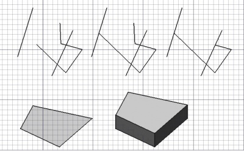

Draft Trimex
|
| Menü konumu
|
| Draft -> Trim/Extend
|
| Workbenches
|
| Draft, Arch
|
| Varsayılan kısayol
|
| T R
|
| Ayrıca bkz
|
| Part Extrude
|
|
Description
This tool trims/cuts and extends lines and polylines, and extrudes faces.

How to use
- Select a wire you wish to trim or extend, or select a face you wish to extrude
- Press the Draft Trimex button, or press T then R keys
- Click a point in the 3D view
Options
- trimming or extending is decided automatically from the position of your mouse
- if you move the mouse cursor over another object, the trim/extend operation will snap to that object or segment
- pressing SHIFT will constrain you to the segment currently being trimmed or extended
- pressing ALT will invert the direction of the trimming
- When the selected object is a face, or a face is selected from an existing object, the trimex tool switches to extrude mode. In extrude mode, pressing SHIFT frees the extrusion from the face normal and allows to snap elsewhere.
Scripting
Not available. See the Part Extrude tool.
{kind=link}
{kind=link}